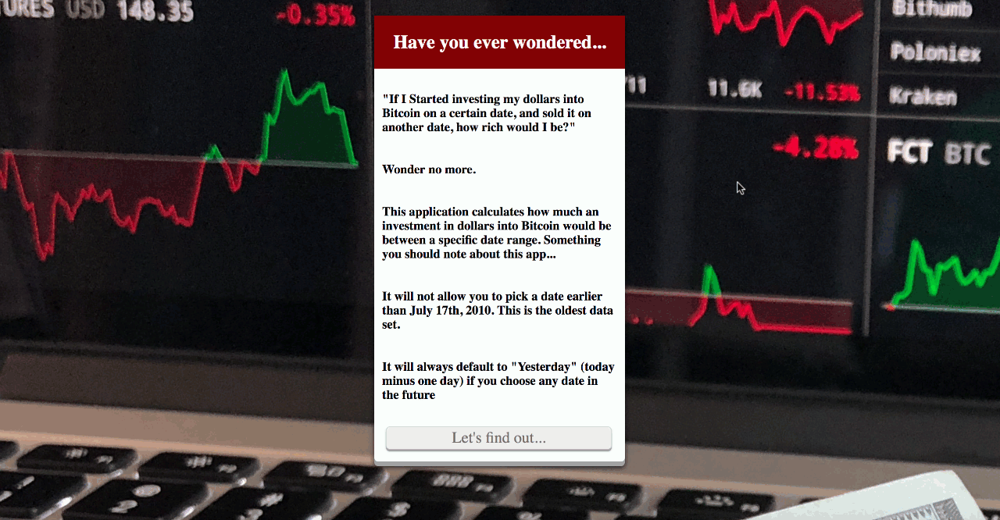

Web Developer, Scriber, and an Security Minded Tech Enthusiast
Contact Information
About Me
I’m a Web Developer, System Administrator, and Documenter of things I learn.
I help people build Web Applications, Cloud Infrastructure, and make sure they are able to “follow the trail” to completion.
When I’m not working on Web Applications or on ‘the Cloud’, traveling with my lovely wife, playing video games, or learning something new!
Currently I’’m working on improving my Software Engineering and Security skills as these are the areas I desire to level up.
Want to work with me? I’d love to hear from you!
Expertise
React
Worked with React/Redux and other related libraries to produce a modern front end Application
JQuery
Exposure to JQuery through various WordPress projects has taught me when and where it is appropriate to use it. These days I utilize it for prototyping in personal projects, or when supporting legacy Applications.
Node.js
Built various scripts and full fledged applications using the backend language. Due to impressive performance and language uniformity, it is my preferred go to language for back end applications.
WordPress
With +4 years of experience supporting WordPress applications it is easily the application I have been exposed the most to. Due to this, my expertise in PHP, JavaScript, and the JQuery library has its roots around the optimizing of this particular CMS
PHP
My experience with Joomla and WordPress has exposed me to PHP through several variations. My expertise here mostly focused on PHP scalability tools (HHVM, version improvements in PHP7), but in more of an administrative role.
HTML/CSS/JavaScript
My Experience with HTML, CSS, and JavaScript in tandem goes back years, with familiarity in pre and post ES6 syntax.
Skills Proficiency
90% Atom IDE
90% AWS Console
90% Git
80% Camtasia
70% Ansible
70% Docker
60% Photoshop
Portfolio
FOMO Calculator

The FOMO Calculator was built during the hype of the Cryptocurrency craze in late 2017, early 2018. Its purpose was to showcase the highs and lows of investing in BitCoin throughout its lifespan. Although the name "FOMO" was chosen due to the culture surrounding cryptocurrency investors, the real purpose of the app was to show people they should err on the side of caution when investing in Bitcoin The Interface was also built to try and be as dynamic as possible - allowing the user to click or type away. This app currently uses the Coindesk API. While no backend will be built in the future, upgrades to the user Interface may take place.
The Web Site Reviews App was my first attempt at a Social Networking app. It utilizes Node.js, MongoDB, and a basic HTML/CSS/JS with JQuery library on the front end.
A user can see reviews on sites without logging in, but to like, dislike, or create a review the user must be signed in to do so. Basic regex is used to filter out some URLs bad URLs, but eventually more complex methods will be utilized to make the site more functional (such as DNS queries, whosis look ups).
My Map Tales was my second attempt at a social networking site, and my first attempt at using React/Redux on the front end application. The backend still utilized Node.js and MongoDB, and JWT authentication as wellThe inspiration behind the application came with the news of Anthony Bourdain's death. With family all over the world, traveling was often seen as a chore in my younger years, and not as a privilege. This man changed my perspective on that, and I wanted a way for other people to share their stories with me.
The Mid Easy Quiz App was an application prototype build with HTML, CSS, JQuery and some good old fashioned JSON.
The premise was to showcase how little people knew about a region they tend to have quite a strong opinion about. The Quiz heavily skews towards facts us in the west may find surprisingly familiar. Kind of the point This project will eventually be rebuilt to be more dynamic and utilize Node.js and MongoDB. React may be utilized if enough time can be poured into it.
La Mirada Wheels is a simple WordPress site, with a few twists. A family member needed a site for SEO purposes that they could easily update. This required me to look at a few drag and drop builder options, but within the scope of WordPress. I decided to use Elementor, but took the opportunity to mess around with Beaver Builder and Divi as well.The end result was La Mirada wheels, a Elementor built, SEO leaning single page site That will allow for custom code modifications in the event the client decides to go in a different route.
As Customer Success Engineer Oversaw ticket, application, and server triaging on behalf of Pagely's customers. These events included, but were not limited to NGINX Reverse Proxies, SSL installations, Application Migrations, Server and Security performance audits, Server resizes, and more.
Due the number of manual processes documentation became extremely Important. As a Technical Solutions Engineer I oversaw prior responsibilities as a Customer Success Engineer, along with the overhaul of Pagely's documentation process, ensuring not only that existing knowledge was saved, but easy to find. Due to the large number of customers with custom configurations, ensuring their specific needs were configured and documented required a process all on its own.
Tech Tribe Gurus, LLC.
Founder
Tech Tribe Gurus, LLC. was formed to learn how to create, conduct, and run an IT consulting Business, while simultaneously honing skills. Through the LLC Coding workshops, various tutorials, and consulting projects have been conducted.
Developer Evangelist
Thinkful
Responsible for leading coding workshops and presenting various resources to hone skills as a Developer. These include, but are not limited to FreeCode Camp, Udemy, and Thinkfuls Engineering Immersion & Flex Developer programs.
DreamHost
Technical Support
Responsible for ticket triaging and System administration tasks, eventually working on several specialized teams including...
DreamHost's Cloud Support team: Responsible for building tutorials and assisting customers on how to utilize the OpenStack platform.
DreamHost's DreamPress Support team: Responsible for assisting customers in utilizing our DreamPress services, which offered scalable WordPress solutions
DreamHost's abuse team: Responsible for working with customers who were in danger of, or breaching our Terms of Service (TOS).
CyberWatch West
Web Manager
This was an intern position which introduced me to Web Administration tasks at Cyber Watch West - a college grant spanning several Colleges/Universities, with the focus of promoting Cyber Security. Responsibilities included updating plugins, posts, and communicating between all organizations involved with the grant through the Joomla run site.
Education & Certifications
Thinkful Dev Bootcamp Graduate
Graduated from Thinkful's Flex Dev bootcamp - an intense six month program that required learning Node.js, MongoDB, JQuery, React, and various other libraries/frameworks in order to build Full Stack Web Applications
AWS Solutions Architect - Associate Level
With the assistance of acloud.guru and my role at Pagely I was able to pass the Amazon Web Services Solutions Architect - Associate level exam. This certifies me to work with AWS architecture, and shows some high-mid level understanding of AWS's services and infrastructure.
Transferred to UCLA with intent to study linguistic and geopolitical factors that drive the Middle East with data driven conclusions, but quickly switched to an interest in social engineering, development and transportation Equity
I joined a NYU travel study program that researched the development of Manhattan, and how transportation inequity has taken root in spite of best intentions. Studies were also done on how social order in a highly dense region through basic social engineering mechanisms. Tools at hand that were utilized involved ArcGIS, MS SQL, and data piped from various Government and Private agencies.
Mt. San Antonio College: A.S. Computer Programming
Introduced to fundamental Computer Science and Information System concepts, while completing my General education for University transfer. Programming languages focused around variations of SQL, Java, C++ and the .NET framework.